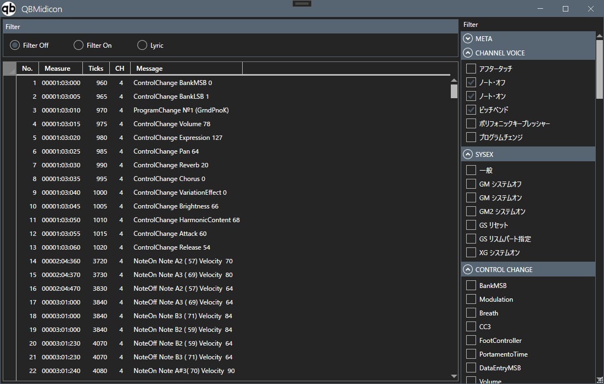

SourceまたはConvertedのトラック一覧で該当行を選択し、右クリックメニューから表示できる、
トラック内の個々のMIDIイベントを一覧表示するウィンドウです。

画面構成
イベント一覧の項目
| 項目 | 説明 |
|---|---|
| No. | イベントの通し番号 |
| Measure | イベントの位置（小節：拍：ティック） |
| Ticks | イベントの位置（ティック単位の絶対値） |
| CH | MIDIチャンネル |
| Message | イベントの内容（例：ControlChange BankMSB 0、NoteOn Note A2 (57) Velocity 70 など） |